R/config.R, 01, 02) re-points at the full
multimodal section via XENIUM_DATASET=big.gene_panel.json + cell_feature_matrix.h5; confirm immune/B-cell & plasma markers; enumerate control features.01_load_qc.R) — lean LoadXenium (centroids only); Xenium-specific QC from cells.parquet: flag (not filter) negative-control / blank-codeword / segmentation-merge cells; remove only zero-count cells.02_cluster_annotate.R) — LogNormalize (all panel genes as features), PCA/UMAP, native igraph Leiden, marker DE, provisional marker-score annotation.Targeted low-plex assay: per-cell counts are inherently low, so no scRNA-style count hard-filter is applied. QC targets control-probe / blank-codeword rates and segmentation quality instead.
| metric | value |
|---|---|
| dataset | kidney_preview_PRCC |
| n_cells_loaded | 56510 |
| n_cells_kept | 56504 |
| median_counts | 57 |
| median_genes | 39 |
| mean_neg_frac | 0.0002682364 |
| mean_blank_frac | 0.0004040181 |
| median_cell_area | 140.0747 |
| median_nuc_cyto | 0.1726458 |
| n_flag_neg | 224 |
| n_flag_blank | 376 |
| n_flag_seg_merge | 109 |
| n_flag_lowq | 339 |
| mean_mtrnr2l_frac | 0.002258258 |
| median_complexity | 0.6956522 |
| seg_merge_count_thr | 277 |
| seg_merge_area_thr | 813.8882 |
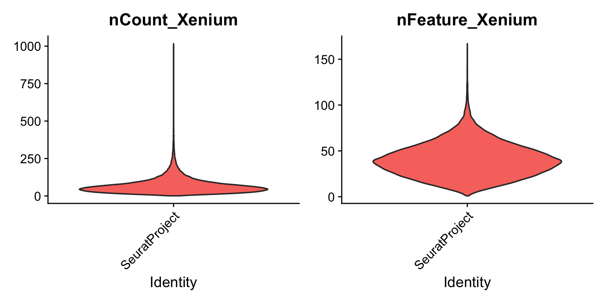
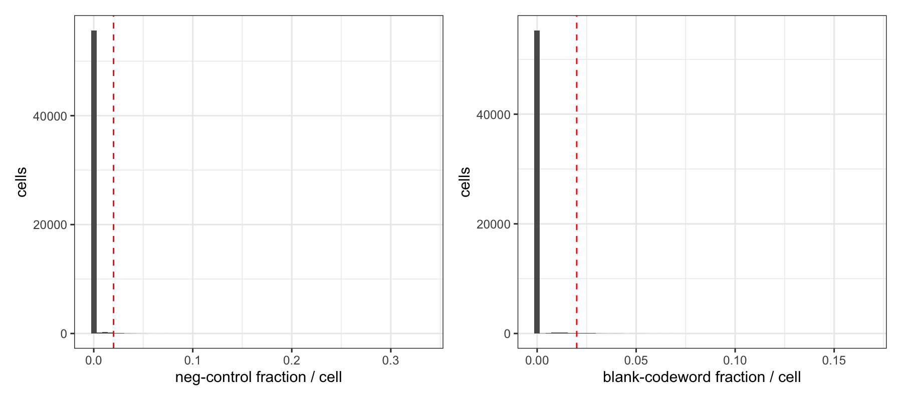
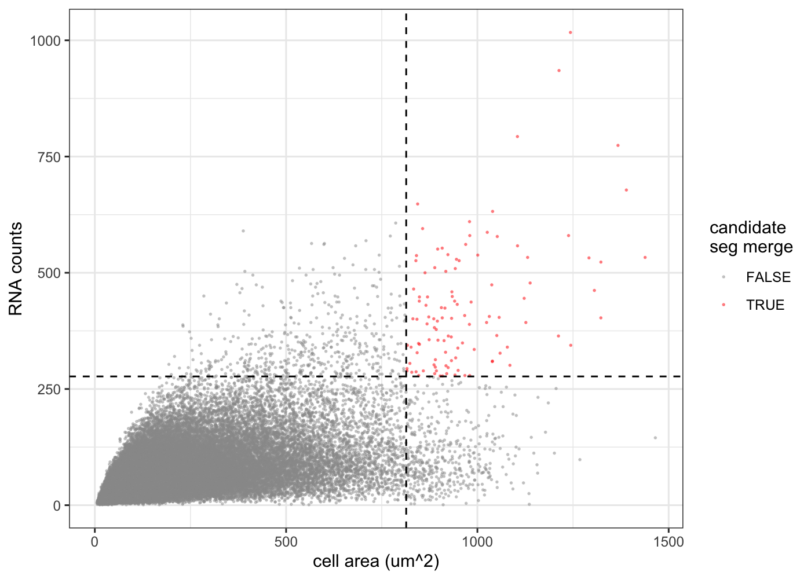
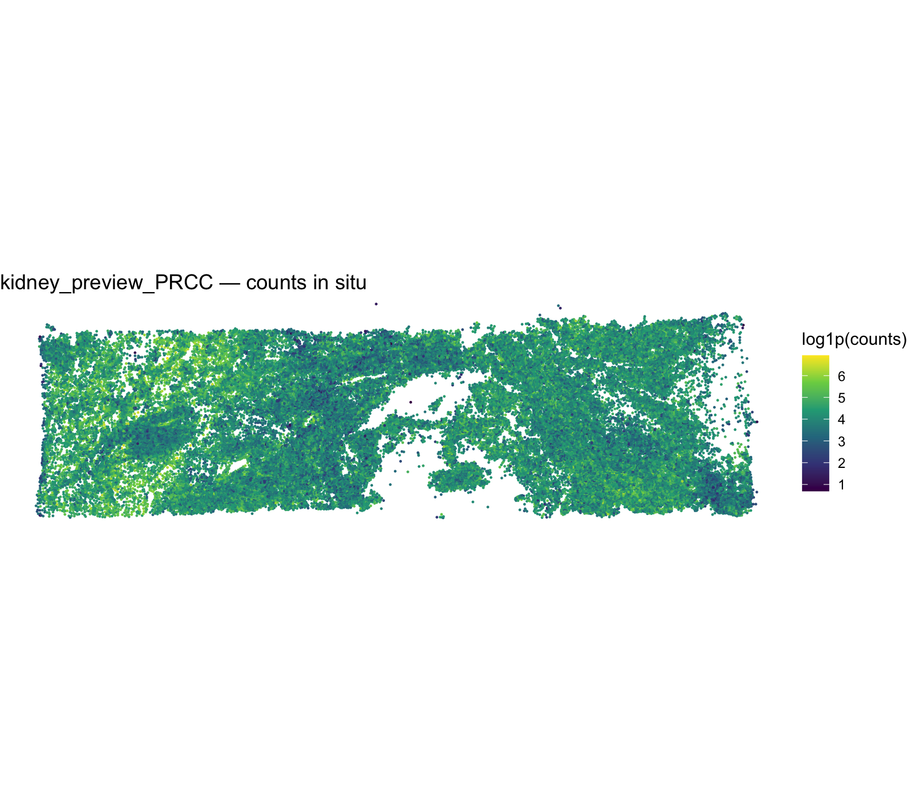
19 Leiden clusters (resolution 0.8, igraph modularity; sub-threshold clusters merged so there are no singletons). Cell-type labels below are provisional — a z-scored marker-set argmax, pending reference-based label transfer.
| cluster | provisional_type | n_cells | top_markers (avg_log2FC) |
|---|---|---|---|
| 1 | T_cell | 9.33e+03 | LAG3, TNFRSF9, CD8A, GZMK, GZMA |
| 2 | T_cell | 6.32e+03 | FOXP3, CCL19, IL7R, SELL, KLRB1 |
| 3 | Myeloid | 4.77e+03 | MARCO, LILRB4, PLA2G7, VSIG4, CD68 |
| 4 | Myeloid | 4.63e+03 | VSIG4, PLA2G7, CD163, CD14, CD68 |
| 5 | Intercalated | 3.98e+03 | SNTN, CYP2F1, TCL1A, CAPN8, CD1C |
| 6 | Stroma_mural | 3.95e+03 | PDGFRA, PDPN, TCIM, CRISPLD2, COCH |
| 7 | Stroma_mural | 3.03e+03 | SFRP2, SFRP4, THBS2, KRT7, CNN1 |
| 8 | T_cell | 2.91e+03 | GZMK, CD8A, NKG7, GZMA, CCL5 |
| 9 | Stroma_mural | 2.83e+03 | MYH11, ACTA2, MYLK, CAVIN1, PDGFRB |
| 10 | Endothelial | 2.64e+03 | VWF, EGFL7, ANGPT2, CD34, ADGRL4 |
| 11 | Tumor_RCC | 2.5e+03 | MET, CD70, C15orf48, ANPEP, EGFR |
| 12 | Stroma_mural | 2.34e+03 | C7, MFAP5, FBLN1, OGN, SRPX |
| 13 | NK_cell | 1.78e+03 | GNLY, KLRD1, PRF1, KLRC1, GZMB |
| 14 | Myeloid | 1.73e+03 | FCER1A, DES, MRC1, CLEC10A, CSF2RA |
| 15 | Plasma | 1.41e+03 | CD79A, MZB1, TENT5C, DERL3, FKBP11 |
| 16 | B_cell | 1.02e+03 | MS4A1, BANK1, CD19, TNFRSF13B, CD79A |
| 17 | Stroma_mural | 707 | DES, PCP4, CNN1, MYH11, KRT7 |
| 18 | Mast | 443 | CPA3, KIT, SLC18A2, IL1RL1, MS4A2 |
| 19 | DC | 189 | LAMP3, CCR7, CD83, CSF2RA, CCL19 |
| cell_type | Freq |
|---|---|
| B_cell | 1.02e+03 |
| DC | 189 |
| Endothelial | 2.64e+03 |
| Intercalated | 3.98e+03 |
| Mast | 443 |
| Myeloid | 1.11e+04 |
| NK_cell | 1.78e+03 |
| Plasma | 1.41e+03 |
| Stroma_mural | 1.29e+04 |
| T_cell | 1.86e+04 |
| Tumor_RCC | 2.5e+03 |
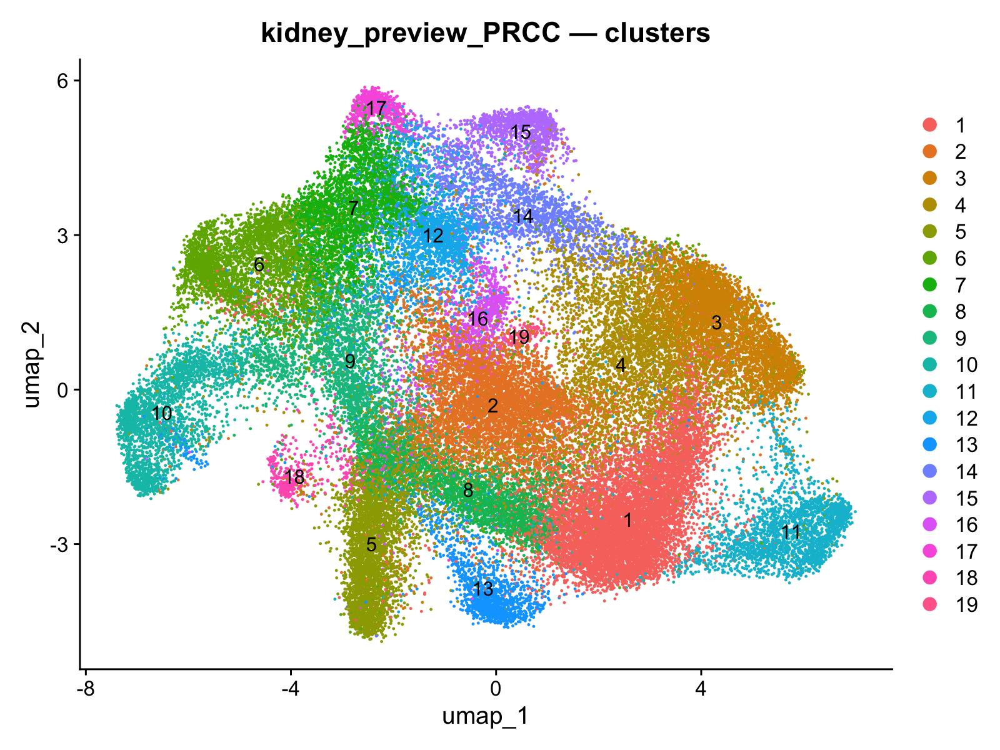
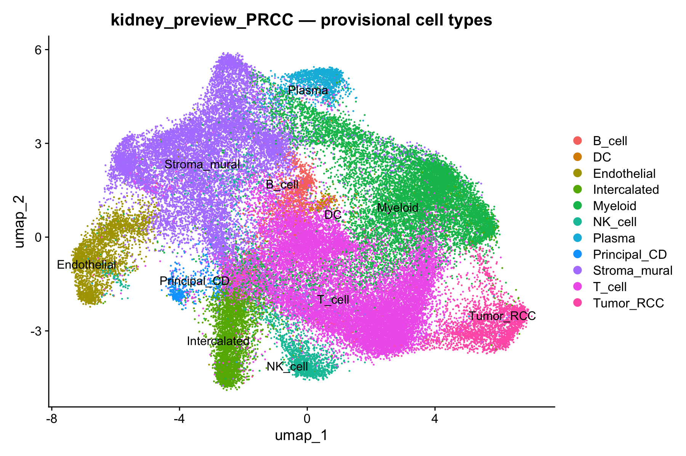
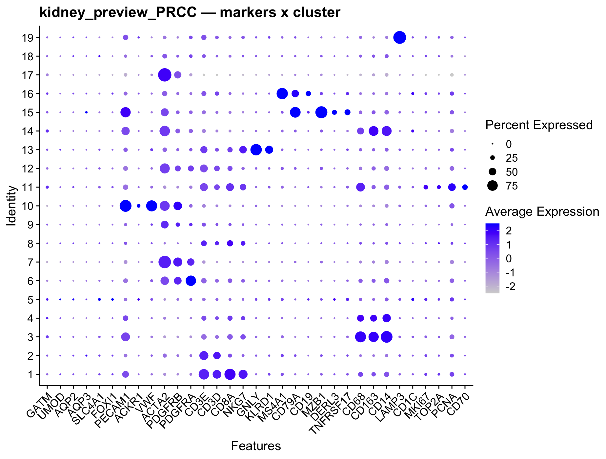
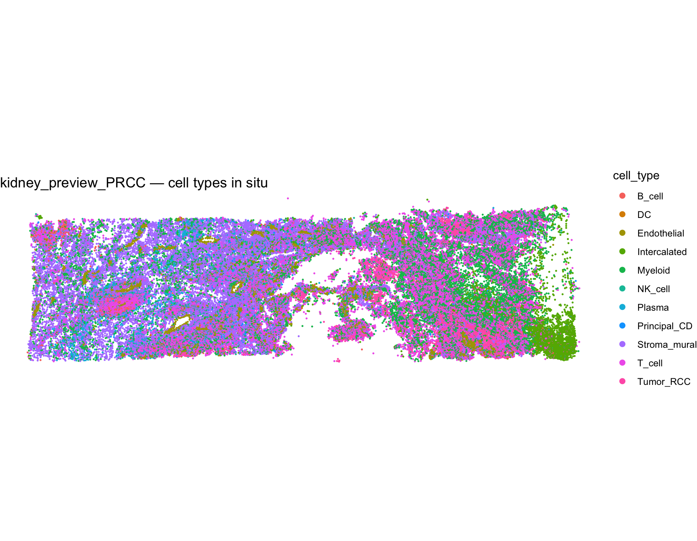
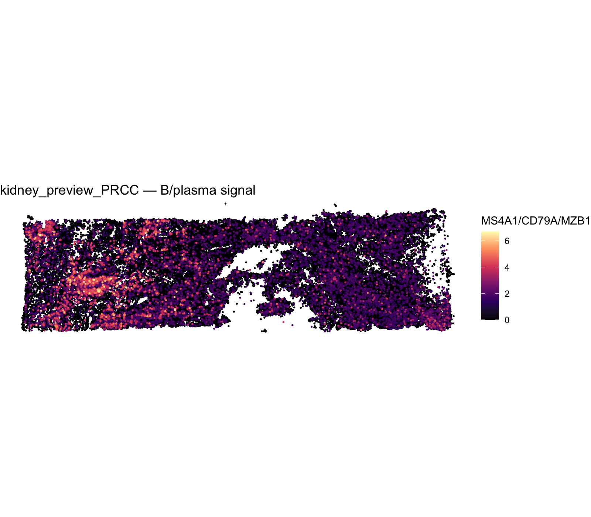
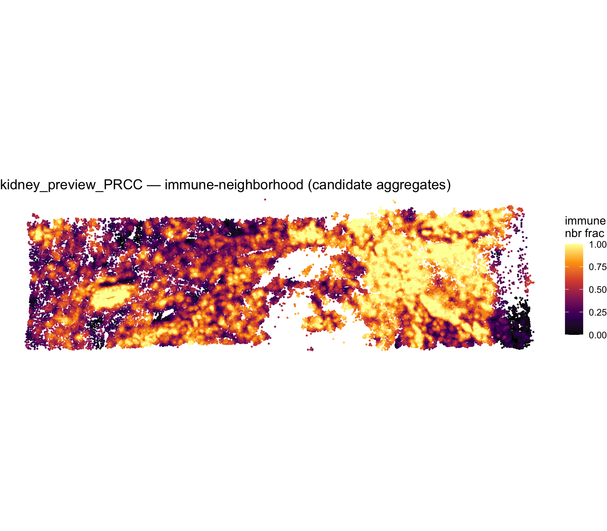
Two reference layers are applied on top of the Leiden clusters and reconciled by per-cluster majority consensus: an immune layer (SingleR vs the celldex Monaco immune reference) and a kidney/epithelial layer (Azimuth mapping onto the KPMP/HuBMAP human-kidney reference). Flagged conflicts are then resolved by a marker lineage gate (below). Tumour, LowQ and Mast keep their marker labels. Provisional pending review.
| cluster | marker_type | singler_main | singler_fine | fine_agreement | concordant | adopted | ref_cell_type |
|---|---|---|---|---|---|---|---|
| 1 | T_cell | CD8+ T cells | Effector memory CD8 T cells | 0.255 | TRUE | TRUE | Effector memory CD8 T cells |
| 2 | T_cell | CD4+ T cells | T regulatory cells | 0.198 | TRUE | TRUE | T regulatory cells |
| 3 | Myeloid | Monocytes | Intermediate monocytes | 0.402 | TRUE | TRUE | Intermediate monocytes |
| 4 | Myeloid | Monocytes | Intermediate monocytes | 0.397 | TRUE | TRUE | Intermediate monocytes |
| 5 | Intercalated | Monocytes | Myeloid dendritic cells | 0.099 | FALSE | FALSE | Intercalated |
| 6 | Stroma_mural | CD4+ T cells | Naive CD4 T cells | 0.136 | FALSE | FALSE | Stroma_mural |
| 7 | Stroma_mural | CD4+ T cells | Low-density basophils | 0.168 | FALSE | FALSE | Stroma_mural |
| 8 | T_cell | CD8+ T cells | Effector memory CD8 T cells | 0.14 | TRUE | TRUE | Effector memory CD8 T cells |
| 9 | Stroma_mural | CD4+ T cells | Progenitor cells | 0.094 | FALSE | FALSE | Stroma_mural |
| 10 | Endothelial | Progenitors | Progenitor cells | 0.548 | FALSE | FALSE | Endothelial |
| 11 | Tumor_RCC | Monocytes | Intermediate monocytes | 0.141 | FALSE | FALSE | Tumor_RCC |
| 12 | Stroma_mural | CD4+ T cells | Naive CD4 T cells | 0.169 | FALSE | FALSE | Stroma_mural |
| 13 | NK_cell | T cells | Natural killer cells | 0.193 | TRUE | TRUE | Natural killer cells |
| 14 | Myeloid | Dendritic cells | Myeloid dendritic cells | 0.522 | TRUE | TRUE | Myeloid dendritic cells |
| 15 | Plasma | B cells | Plasmablasts | 0.468 | TRUE | TRUE | Plasmablasts |
| 16 | B_cell | B cells | Switched memory B cells | 0.143 | TRUE | TRUE | Switched memory B cells |
| 17 | Stroma_mural | Progenitors | Progenitor cells | 0.273 | FALSE | FALSE | Stroma_mural |
| 18 | Mast | Basophils | Low-density basophils | 0.472 | FALSE | FALSE | Mast |
| 19 | DC | CD4+ T cells | Myeloid dendritic cells | 0.175 | TRUE | TRUE | Myeloid dendritic cells |
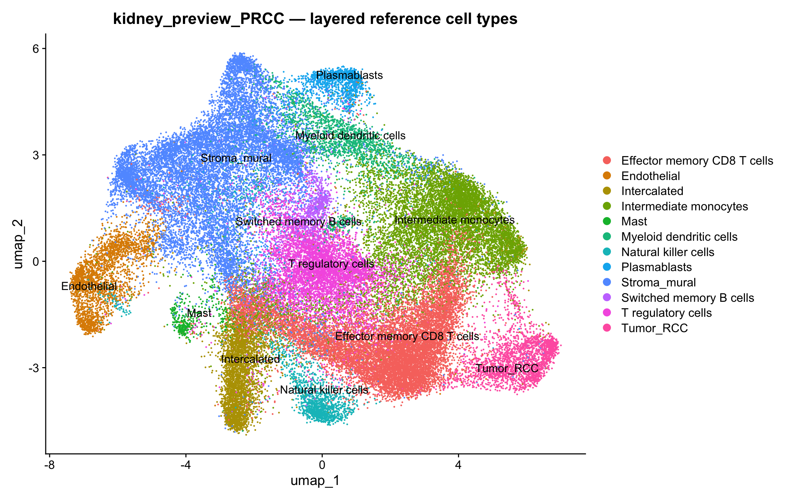
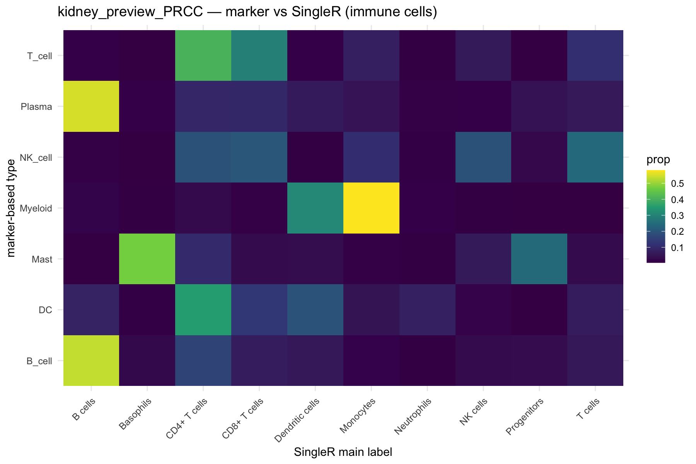
| cluster | marker_type | immune_label | kidney_l1 | conflict_type | cd3_pct | ptprc_pct | resolution_basis | protein_concordant | resolved | flag_review | final_ref_cell_type |
|---|---|---|---|---|---|---|---|---|---|---|---|
| 1 | T_cell | Effector memory CD8 T cells | Immune | none | 0.975 | 0.916 | NA | FALSE | FALSE | Effector memory CD8 T cells | |
| 2 | T_cell | T regulatory cells | Immune | none | 0.939 | 0.854 | NA | FALSE | FALSE | T regulatory cells | |
| 3 | Myeloid | Intermediate monocytes | Immune | none | 0.643 | 0.868 | NA | FALSE | FALSE | Intermediate monocytes | |
| 4 | Myeloid | Intermediate monocytes | Immune | none | 0.565 | 0.596 | NA | FALSE | FALSE | Intermediate monocytes | |
| 5 | Intercalated | Intercalated | Immune | Epi_Immune | 0.378 | 0.37 | ambiguous (PTPRC pct=0.37, epi pct=0.07) -> keep Intercalated (review) | NA | FALSE | TRUE | Intercalated |
| 6 | Stroma_mural | Stroma_mural | Fibroblast | none | 0.603 | 0.47 | NA | FALSE | FALSE | Fibroblast | |
| 7 | Stroma_mural | Stroma_mural | Fibroblast | none | 0.357 | 0.26 | NA | FALSE | FALSE | Fibroblast | |
| 8 | T_cell | Effector memory CD8 T cells | Immune | none | 0.64 | 0.423 | NA | FALSE | FALSE | Effector memory CD8 T cells | |
| 9 | Stroma_mural | Stroma_mural | Immune | none | 0.415 | 0.277 | NA | FALSE | FALSE | Stroma_mural | |
| 10 | Endothelial | Endothelial | Endothelial | none | 0.383 | 0.31 | NA | FALSE | FALSE | Endothelial | |
| 11 | Tumor_RCC | Tumor_RCC | Immune | none | 0.803 | 0.68 | NA | FALSE | FALSE | Tumor_RCC | |
| 12 | Stroma_mural | Stroma_mural | Immune | Epi_Immune | 0.813 | 0.751 | PTPRC-high (pct=0.75) -> immune infiltrate/doublet (review) | NA | FALSE | TRUE | Immune infiltrate/doublet |
| 13 | NK_cell | Natural killer cells | Immune | none | 0.702 | 0.772 | NA | FALSE | FALSE | Natural killer cells | |
| 14 | Myeloid | Myeloid dendritic cells | Immune | none | 0.444 | 0.743 | NA | FALSE | FALSE | Myeloid dendritic cells | |
| 15 | Plasma | Plasmablasts | Immune | none | 0.488 | 0.548 | NA | FALSE | FALSE | Plasmablasts | |
| 16 | B_cell | Switched memory B cells | Immune | none | 0.662 | 0.722 | NA | FALSE | FALSE | Switched memory B cells | |
| 17 | Stroma_mural | Stroma_mural | Fibroblast | none | 0.215 | 0.188 | NA | FALSE | FALSE | Fibroblast | |
| 18 | Mast | Mast | Immune | none | 0.47 | 0.336 | NA | FALSE | FALSE | Mast | |
| 19 | DC | Myeloid dendritic cells | Immune | none | 0.561 | 0.534 | NA | FALSE | FALSE | Myeloid dendritic cells |
CD3 (T_lineage) splits T vs non-T; PTPRC splits immune vs epithelial. Percent-positive cutoffs: high ≥ 0.5, neg < 0.15. Ambiguous evidence is never forced (kept + flag_review).
| final_ref_cell_type | Freq |
|---|---|
| Effector memory CD8 T cells | 1.22e+04 |
| Intermediate monocytes | 9.4e+03 |
| Fibroblast | 7.69e+03 |
| T regulatory cells | 6.32e+03 |
| Intercalated | 3.98e+03 |
| Stroma_mural | 2.83e+03 |
| Endothelial | 2.64e+03 |
| Tumor_RCC | 2.5e+03 |
| Immune infiltrate/doublet | 2.34e+03 |
| Myeloid dendritic cells | 1.92e+03 |
| Natural killer cells | 1.78e+03 |
| Plasmablasts | 1.41e+03 |
| Switched memory B cells | 1.02e+03 |
| Mast | 443 |
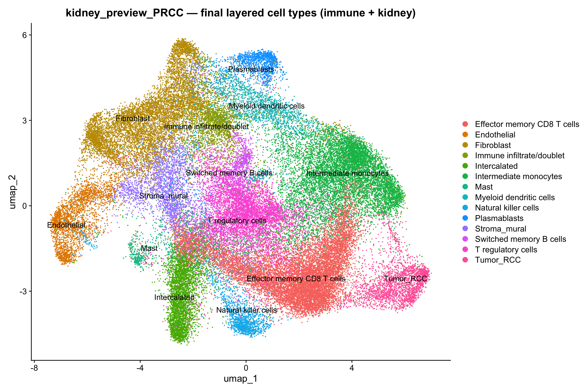
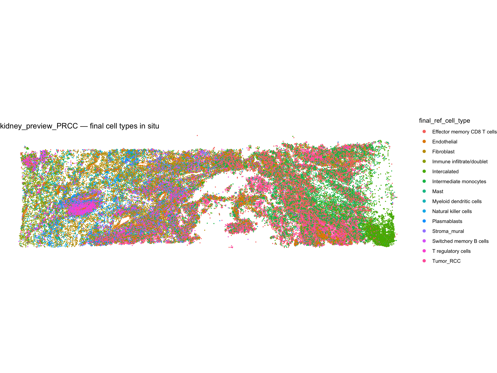
XENIUM_DATASET=big) adds the 27-plex protein and is loaded via the manual h5
path that handles the panel's Deprecated Codeword features.